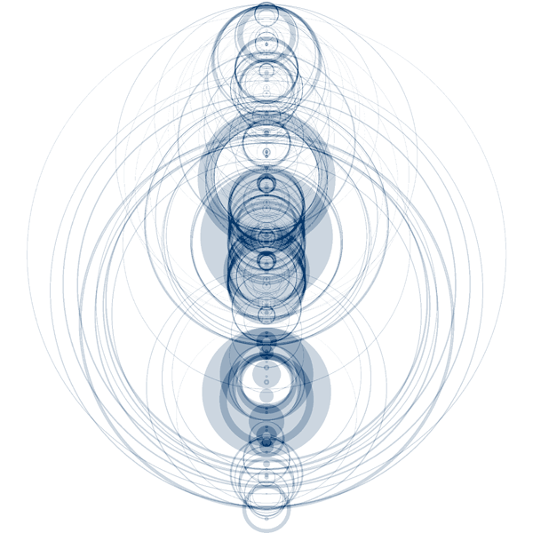

The Structure in Song
Background

This project began when I was thinking about how as humans, we have an intuitive sense of structure in music. We can tell what a chorus sounds like and we often can tell what we think should come next. So I wondered, what does dissonance or consonance in music “look” like? Can compositions be visualized in a meaningful way to an observer? What makes the Beatles the Beatles, or Stravinsky so distinct? Can we visualize the nuances that different orchestras or performers bring to the same piece? Can each musical composition be expressed as a visual “fingerprint” that tells us more about the performers and composers?
My goal became visualizing music in a way that makes sense musically, mathematically, and artistically as sculpture or image. My premise was that music can be visualized in such a way that distinctive features we hear in a composition are also apparent in a visual representation; that the inherent structure of compositions can be embodied as form, color, texture, and light.
Much work has been devoted to expressing musical pieces as line structures (The Shape of Song, Narrative 2.0, and so on) and - one of my favorites - as a genre map. However, the area of sculpture has been left largely untouched (Though look at this neat example).
The motivation for this project was to make music more accessible and more tangible to those who haven’t developed a love for music, yet also rigorous enough to satisfy those with a knowledge of music theory and composition.
Introduction
There are many approaches that can be taken when classifying or describing music. Something to remember is that music is inherently perceptual and any study of the structure of music should keep this in mind. One can classify and describe music in a variety of valid ways. One can consider the cultural impact of the music (think of the Beatles), the perception of the artist, the physical medium that we buy (record, CD, file, with its associated art and meta-data), or the raw audio file itself. Considering any category in isolation may provide incomplete information on what exactly we consider that piece of music to be. I chose to look at the raw audio and analyze it because the act of listening is when we notice music’s structure.
Ideas
Even when looking at the raw audio, there are a variety of approaches. One can distill the audio file into a long list of statistics (average energy, zero crossing rate, the distribution of the frequencies, etc.), look at its structural makeup (i.e. ABACABA form; Bridge, Verse, Chorus), or use the Fast Fourier Transform (FFT) to analyze the frequencies. I decided to use the FFT to describe the song because the spectrum at a given time provides a lot of information and we can scaffold other methods on top of this initial analysis.
I broke the audio into overlapping windows, or frames, as they are called (see below). There are standards for the size of the frames and the amount of overlap between frames (See Music Similarity and Retrieval). When you look at a frame of the audio file, it’s important to apply a Hamming filter, which forces the sample to be periodic, no matter where the frame starts or stops. This is needed to get rid of artifacts in the FFT computation, however, it removes information at the beginning and end of the frame, which is why overlap (“hop” in standard terminology) between frames is a best practice.
Recall that music is inherently a perceptual medium and so, we, as humans, do not perceive sound absolutely, but rather, relatively. The mel scale was developed to captured to account for the non-linear way in which we perceive relative pitch and the sone and phon scales capture how we perceive loudness depending on the pitch.
From the frequency spectrum that I computed for each frame, I computed the Mel Frequency Cepstral Coefficients (MFCCs) which are defined most simply as the frequency of the log frequencies relative to the Mel scale described above. Here’s a visual of the process of computing MFCCs:
Figures
I visualized each piece in two different ways. First, I computed the FFT for each frame and created a contour plot of frequencies vs. time (This is known as the short-time Fourier transform or STFT). I had to display the log of the amplitude of the frequencies to see detail because the amplitude of the raw audio has many different orders of magnitude. Second, I plotted the first and second components of the MFCC as a scatter plot.
Rock Music
Here’s an example from U2’s “American Soul”, a bombastic rock anthem (Wow, this sounds like a review! Hah.)
Jazz Music
Here’s an example from Pink Martini: “Una Notte a Napoli”
Classical Music
This is an ethereal classical piece.
As we see, there is distinct structure for each type of music. The STFT gives a direct correlation to tonal structure, whereas with MFCCs, we can actually map the piece of music spatially.